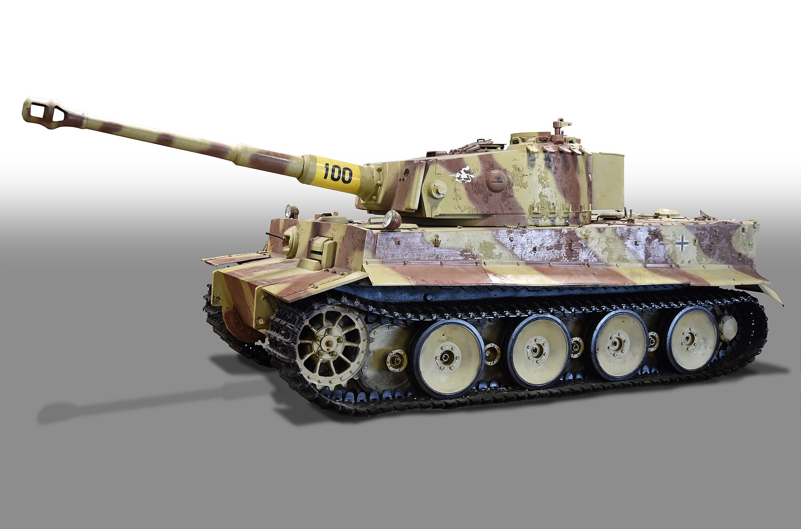
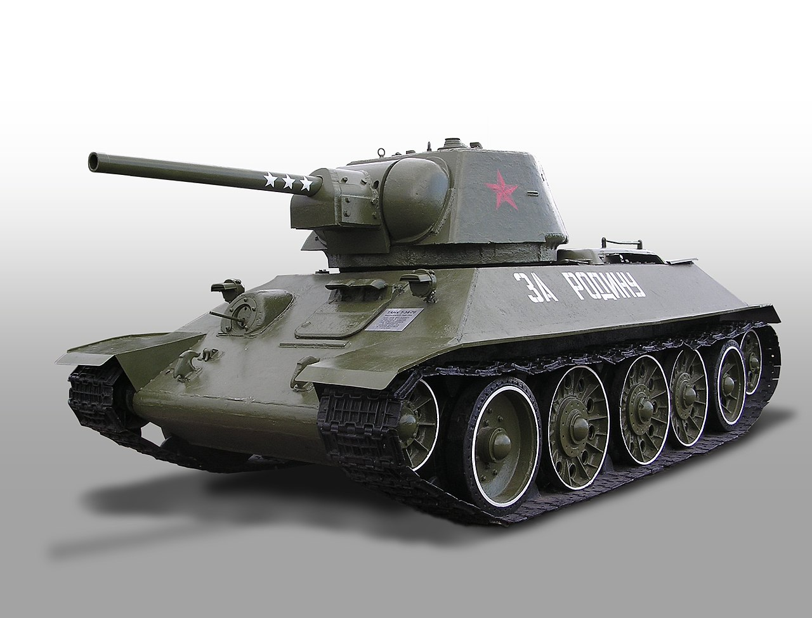
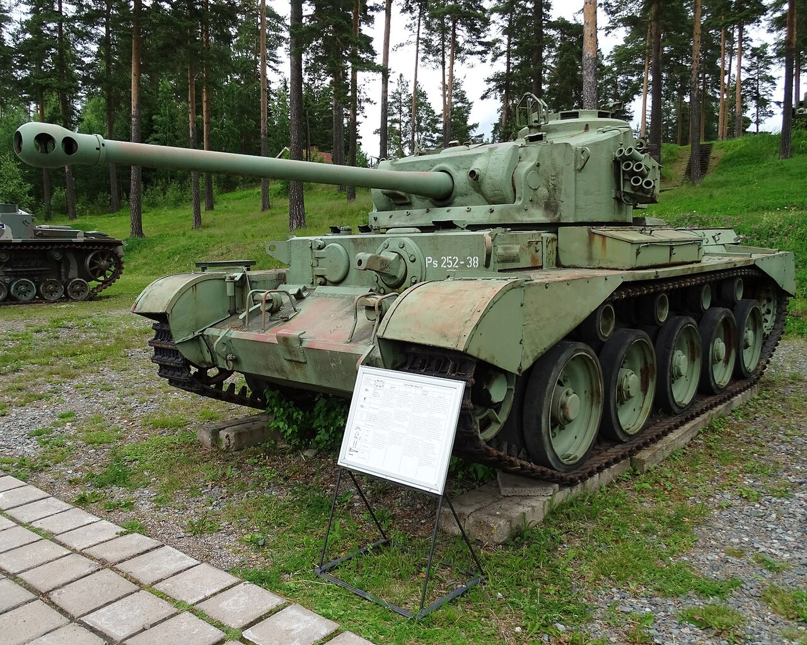

Niemiecki czołg ciężki PzKpfw VI Tiger z okresu II wojny światowej.
Uzbrojony w armatę kalibru 88mm oraz 2 karabiny maszynowe MG 34 kal. 7,92mm,
produkowany był w latach 1942-1944 w tym okresie wyprodukowano 1355 egzemplarzy.

Radziecki czołg średni T-34 z czasów II wojny światowej i czasów późniejszych.
Uzbrojony w działo kalibru 76,2mm oraz 2 karabiny maszynowe DT kal. 7,62mm,
produkowany był w latach 1940-1957 w tym okresie wyprodukowano ok.84070 egzemplarzy.

Amerykański czołg średni M4 Shreman z okresu II wojny światowej.
Uzbrojony w działo kalibru 75 mm oraz 1 wielko kalibrowy karabin maszynowy Browning HB2 kal. 12,7mm oraz 2 karabiny maszynowe M1919A4 kal. 7,62mm,
produkowany był w latach 1942-1945 w tym okresie (wszytkie wersje) wyprodukowano 49000 egzemplarzy.

Brytyjski czoł pościgowy Comet A34 Crusier Tank z okresu II wojny światowej.
Uzbrojony w działo kalibru 77 mm oraz 2 karabiny maszynowe Besa kal. 7,92mm
produkowany był w latach 1944-1945 w tym okresie wyprodukowano 1200 egzemplarzy.